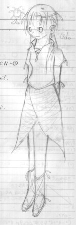
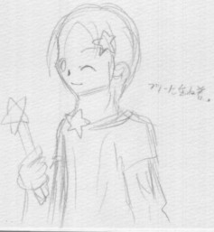

 ジャンル外失礼；今ハマっているメテオスの中から、ウドー星人の擬人化を。 ウドーは比較的安定して使えるので好きです。ちなみにコレも数学ノートより（笑。
 今度は擬人化カービィ。いやぁすっごい手抜き絵ですいません；ちなみに、汚い字はお気にせず。 最近描く機会が何故か多いこの方。 妹はすっごいカービィに力をいれておりますが自分はさっぱりです。 カービィ、好きなんだけどなあ。…誰か私にキッカケを下さい（逃。